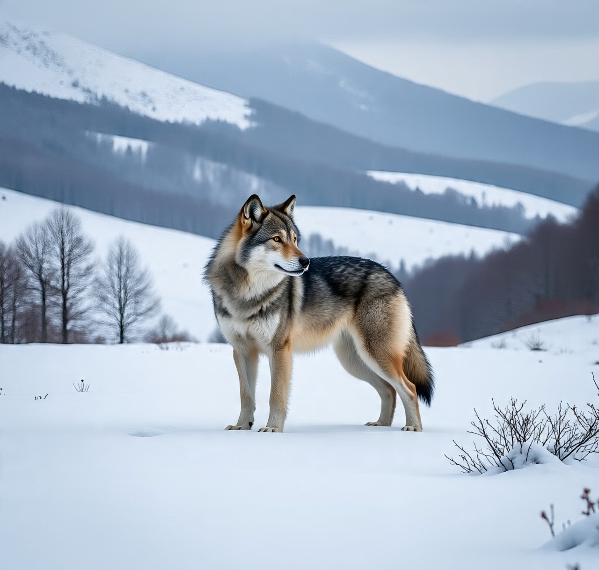
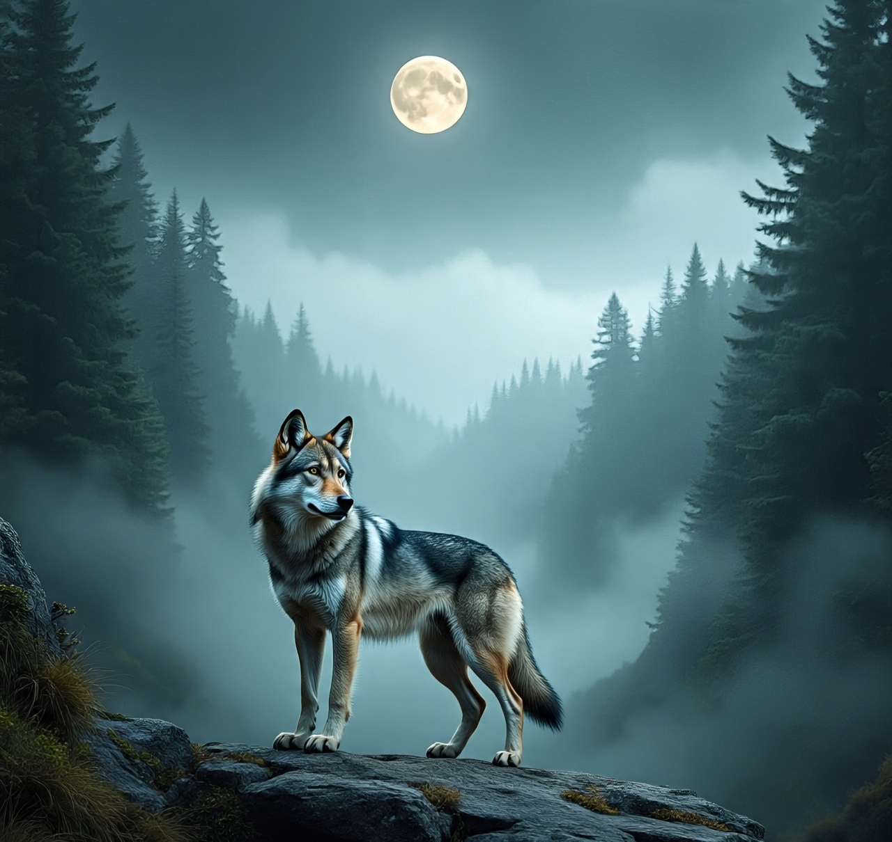
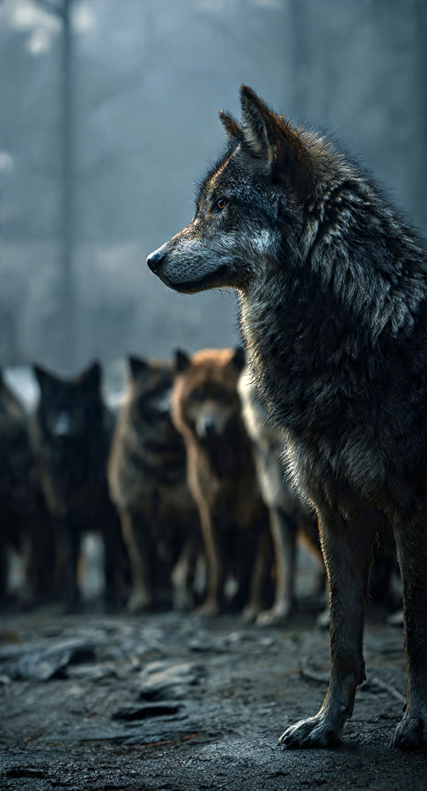
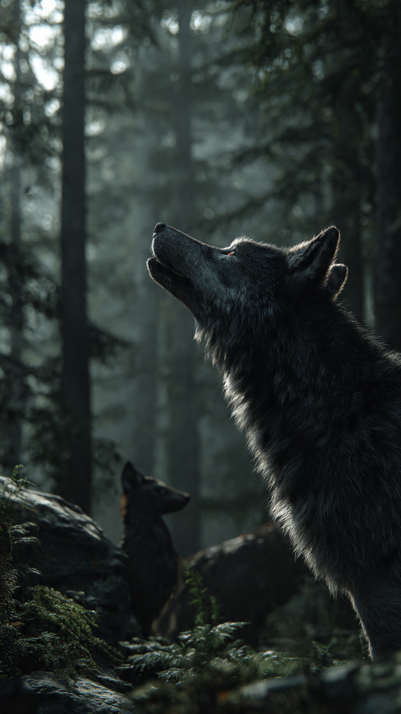

Chapter Three
The Pains
Through the burning heat of the sun and the freezing cold of the winter, the Lone Wolf was still standing strong in order to achieve his goals. When the storm came hard, this lone wolf never gave up — he kept focused on the future that everything will be alright.
He had to starve when he found nothing to hunt, he was also chased by other animals that were stronger than him, fought with most and ran for his life.

He went deep in the wild and discovered a lot that he would not have discovered as a member of a pack. He had to swim through deadly waters, stump through muddy soil, even pass through sharp thorns — but nevertheless, he did not give up.
During this process he was actually building himself and his relationship with other factors like the animals and plants in the wild. He knows what they would like and what they do not like.

Chapter Four
Don't Call It A Come Back
After going through all those suffering, torment and training, he finally achieved his goal. He found a space, a very beautiful one where he settled down and called his own land. He led all the animals that lived in it and became the head of that land. Ruled there for years and even won battles over his rivals, claimed their land and became the head.

Now, he had to fight with the people in which his real family lived. He had no choice — they dumped him because they found no ability in him.
By the time he got to the land of his family, they all thought he had come back to help them because they were short of soldiers. But they were shocked when they saw the warriors of the people who slayed their soldiers with the Lone Wolf — and they were frightened.
They wanted to help him, but those were his guards, so they reacted towards his family when they drew closer to him. Then he stood them down and told his family:
And left saying "Don't call this a come back."
